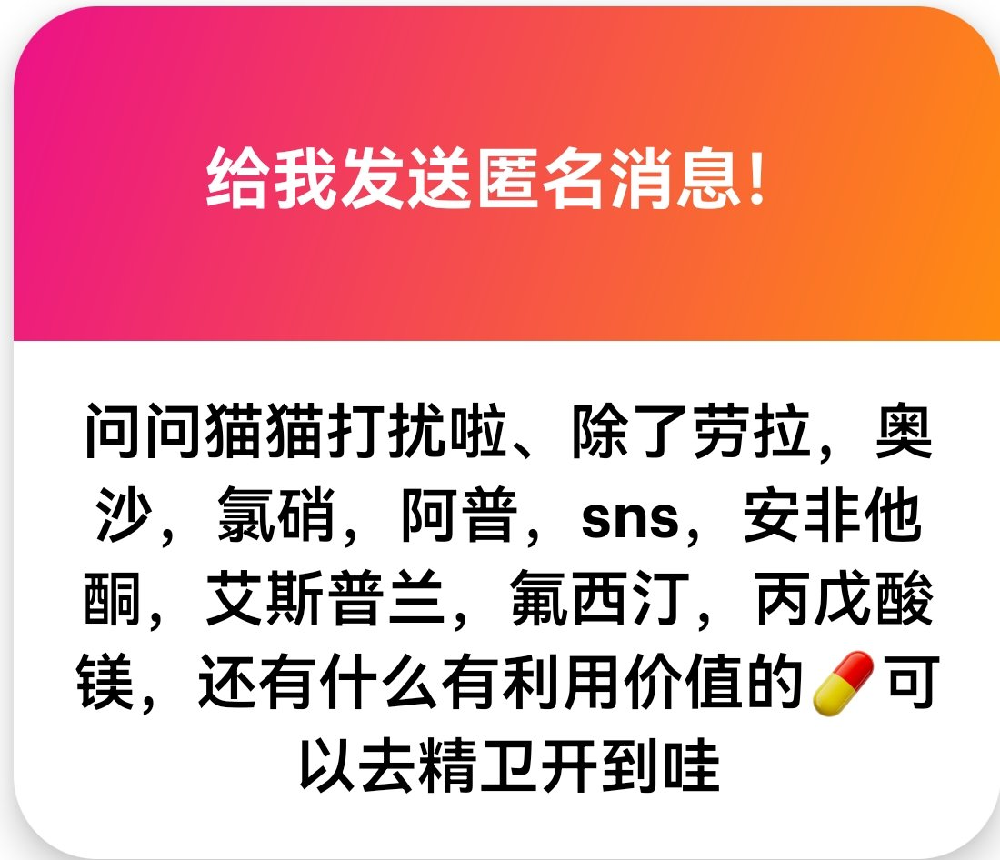

ominous
@UWATCHLIFE
@Lomyral114514 毒品（即答）

Lomyral 3.0(已老实)
@Lomyral114514
p1 不能。虽然安非他酮和哌甲酯都是NDRI，但是哌甲酯对DAT的亲和度远高于安非他酮，不管是从娱乐价值还是实用价值来看这俩都不是一个级别的。此外安非他酮+咖啡因还会提高癫痫发作的风险，不建议联用
p2 “利用价值”这个词的释义实在是太宽泛了，具体是指哪方面的利用价值呢？ https://t.co/9fobZGzJU8